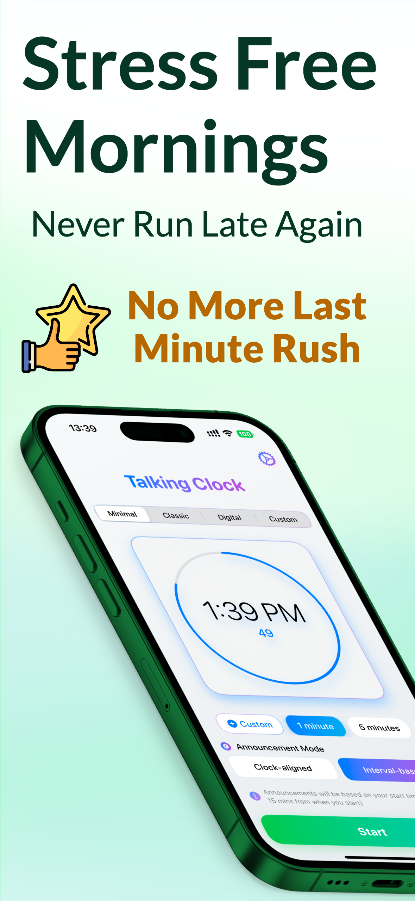
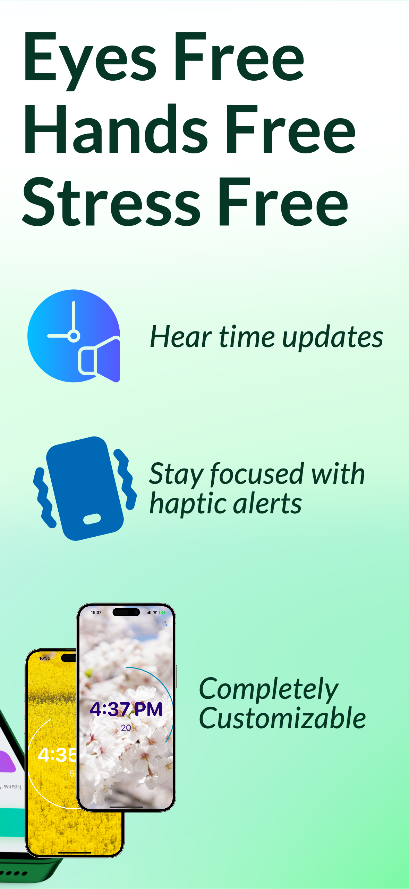
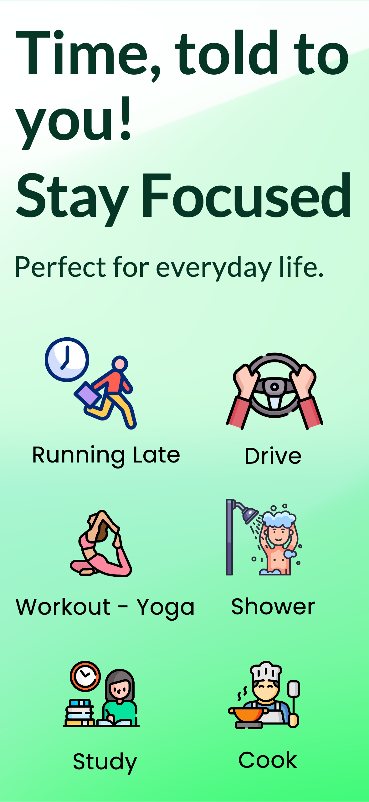
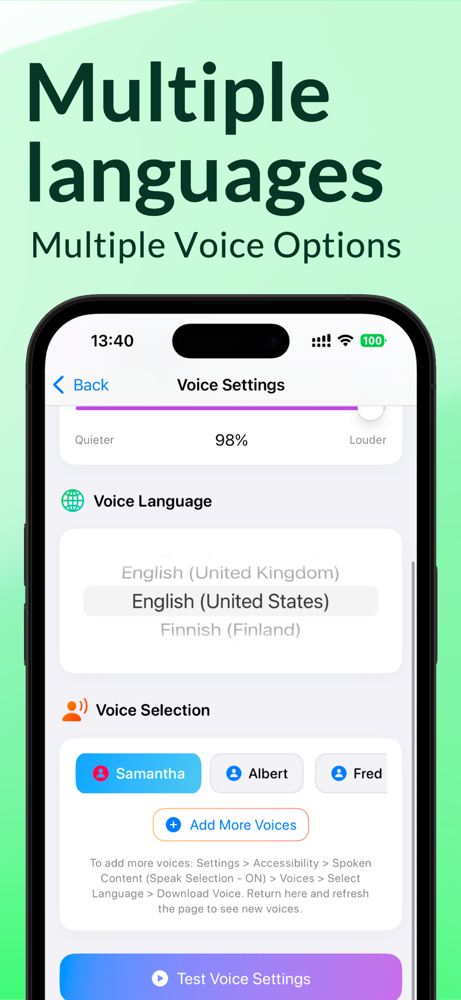
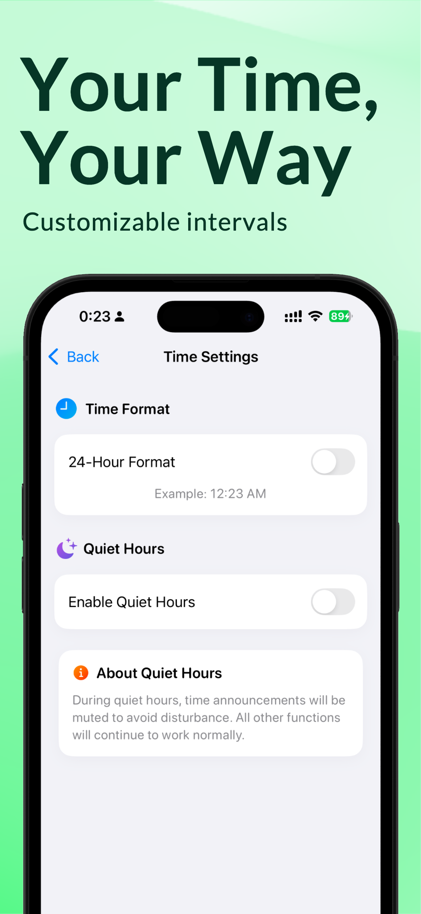

Hands-Free Time Management
Eyes free, hands free, stress free. Get time updates while focusing on what matters most. Perfect for ADHD, accessibility, multitasking, and everyday life scenarios.





Multiple voice options with natural pronunciation in your preferred language
Clock-aligned and interval-based announcements to fit your workflow
Lightweight design with smooth background operation that won't drain your battery
Adjust intervals, quiet hours, voice settings, and time formats to match your needs
At Voice Clock Time Speaker, we are committed to protecting your privacy and ensuring complete transparency about our data practices.
Voice Clock Time Speaker respects your privacy. The app only requires:
No personal data is collected or shared with third parties.